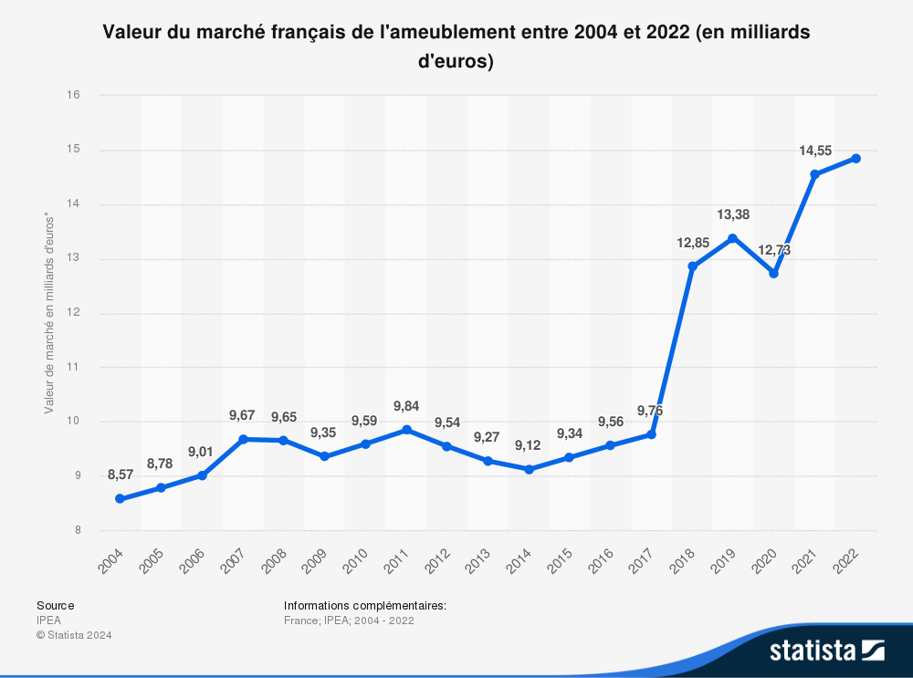

recherche
recherche
Ikea a en moyenne 15 millions de clients par an en France faisant des achats entre 150 et 200 euros. Ses client son motiver par de meuble après un déménagement par exemple mais aussi par les prix abordable d’Ikea et la qualité de leurs service après vente. De plus Ikea à une image très positive et une bonne réputation, elle fait partie des marque préférée des consommateur (voir ci dessous). Cela provoque une fidélité à la marque Ikea.
Ikea a cause de sa présence internationale doit modifier sa communication et son catalogue en fonction des région du monde par exemple ikea avait du supprimer la présence d’un couple homosexuel d’un de lors catalogue en Russie. De plus Ikea doit aussi prendre en compte l’évolution de la demande en fonction des marchés, on peut par exemple voir que la demande augmente assez peu en Europe et en Amérique du nord en comparaison avec l'Asie ou la demande explose.